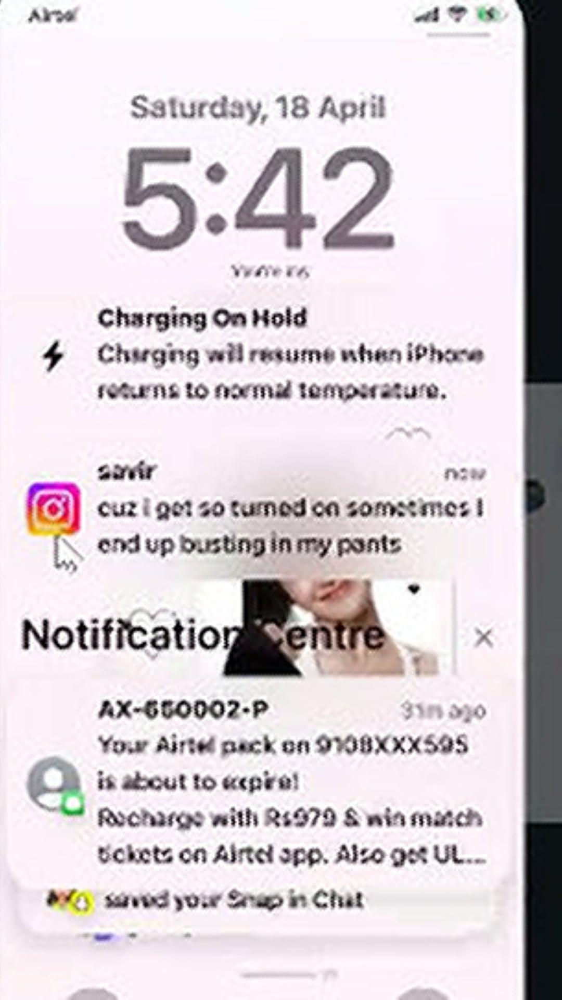

Savir Is Innocent
Anonymous screenshots were spread online without proper verification. Evidence analysis raises serious doubts about their authenticity.
Please evaluate verified evidence fields prior to distributing public statements or conclusions.
Evidence Analysis

Click to Inspect
Image 1 Analysis
- The screenshot claims to represent an iOS environment.
- A visible mouse cursor appears inside the screenshot, which is inconsistent with normal iPhone screenshots.
- Windows Snipping Tool does not automatically insert mouse cursors into screenshots.
- Cursor placement and visible glitches strongly suggest manipulation or compositing.
- The image quality is unusually poor for a modern iOS screenshot.

Click to Inspect
Image 2 Analysis
- AI analysis flagged the image as digitally edited.
- Compression artifacts and inconsistent rendering reduce authenticity.
- Visual inconsistencies suggest possible manipulation.

Click to Inspect
Image 3 Analysis
- AI analysis detected signs of digital editing/manipulation.
- Heavy quality degradation raises authenticity concerns.
- Distorted visual details suggest the image may not be original.
General Evidence Summary
Consolidated structural audit overview:
Modern smartphones, especially iPhones, normally produce high-resolution screenshots. Extremely low-quality screenshots can hide editing traces.
Anonymous uploads without verifiable sources should not automatically be treated as factual evidence.
Multiple inconsistencies across the screenshots raise serious doubts regarding authenticity. AI analysis tools identified likely manipulation in multiple images.
Timeline of Investigation
Event Trigger
Anonymous screenshots appeared online.
Amplification Phase
Accusations spread rapidly before verification.
Analytical Evaluation
Evidence analysis later raised concerns about authenticity.
Structural Insights Disclosed
Discussions emerged regarding cursor inconsistencies, editing artifacts, and manipulated visuals.
Fairness & Respect
Nobody should be bullied, harassed, or labeled guilty without verified proof. We encourage critical thinking, fairness, and responsible online behavior across all digital communications.
“Facts matter more than rumors.”